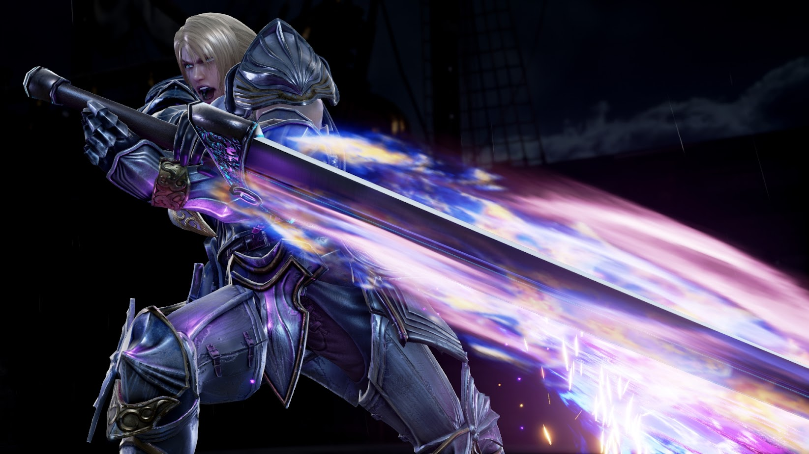
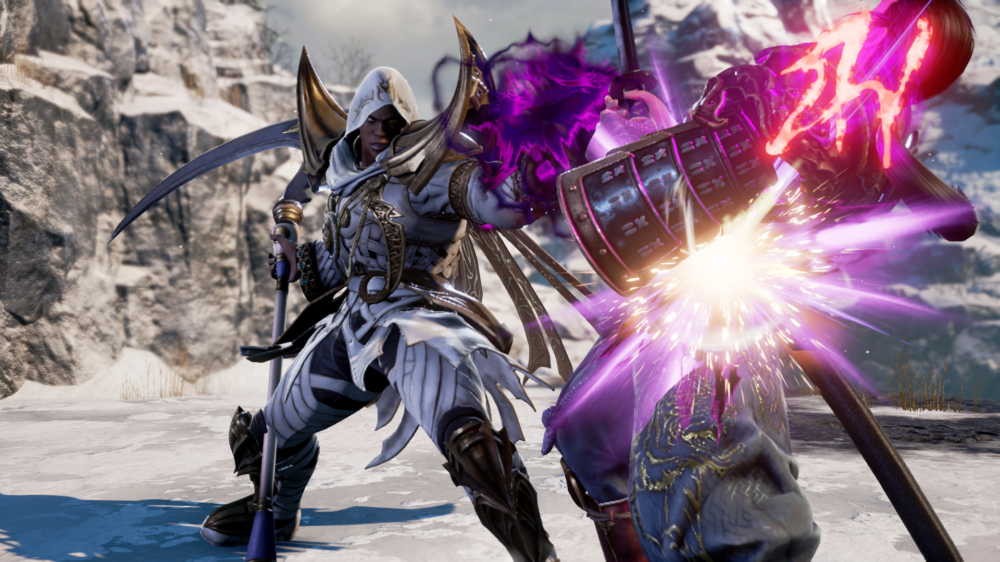
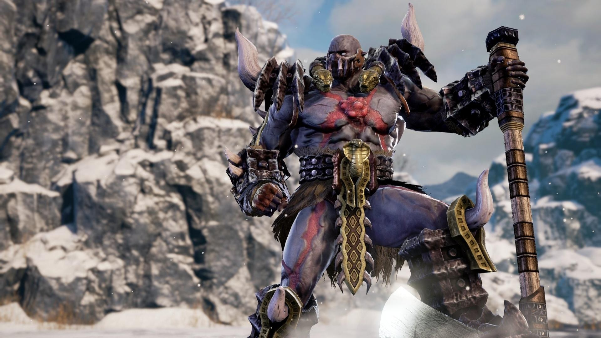

SOULCALIBUR VI
Soulcalibur VI is a fighting game developed by Bandai Namco Studios and published by Bandai Namco Entertainment for the PlayStation 4, Xbox One, and Microsoft Windows in 2018. It is the seventh main installment in the Soulcalibur series.

Gameplay
Following the tradition of prior installments of the Soulcalibur series, Soulcalibur VI's gameplay involves two weapons-wielding combatants battling against one another using a 3D system. The game kept many of the familiar gameplay elements including 8-Way Run, Guard Impact, and character creation, but adds to the traditional formula by introducing new mechanics such as Reversal Edge and the newly revamped Soul Charge. The Reversal Edge allows players to defend against an oncoming attack and quickly strike back, alongside a slow-motion effect, enabling more defensive options for the players.

SYNOPSIS
Soulcalibur VI serves as a reboot to the series, taking place during the 16th century to revisit the events of the first Soulcalibur game/second Soul series game entry to "uncover hidden truths". It takes place after the events of Soulcalibur V (which is during the Soul Chronicles of Cassandra, Amy and Zasalamel's stories) where the Cassandra from the original timeline tells her past self about the grim future of the Alexandra family, Amy's original future-self is revealed to be Viola, and Zasalamel receives a vision from his future self that causes him to abandon his plan to seek death and decide to lead humanity to a brighter future.
The plot of Soulcalibur VI begins from a remake of the second Soul game entry, taking place from 1583 to 1590. In addition, the story is divided into two separate modes. The Soul Chronicle is the main plot of the story, concerning the main characters and the immediate threat of Nightmare. In this mode, the story is told similar to a visual novel with illustrated, voiced cut scenes telling the plot and are broken up by matches acting as significant battles in-story. The first main story is centered around the character of Kilik as he ventures out to confront the Soul Edge and Nightmare and takes place mostly in Europe. In addition, every character is also given an individual story line detailing their backstories or serving as side stories to the main plot, one of the characters’ story timeline chapters takes place after the first main story, a year before the events of the original trilogy.
The second story mode, named the Libra of Soul, takes place shortly after the Evil Seed event of 1583 wherein Siegfried acquired the Soul Edge and became Nightmare. In this mode, the player creates a custom character that serves as the protagonist. Mostly centered in Asia, the player must go through a journey to prevent Azwel from recreating the Evil Seed all the while dealing with their own malfestation. This runs concurrently with the main plot in the Soul Chronicle and on occasion the player character will encounter other characters from the main story.
The plot of Soulcalibur VI begins from a remake of the second Soul game entry, taking place from 1583 to 1590. In addition, the story is divided into two separate modes. The Soul Chronicle is the main plot of the story, concerning the main characters and the immediate threat of Nightmare. In this mode, the story is told similar to a visual novel with illustrated, voiced cut scenes telling the plot and are broken up by matches acting as significant battles in-story. The first main story is centered around the character of Kilik as he ventures out to confront the Soul Edge and Nightmare and takes place mostly in Europe. In addition, every character is also given an individual story line detailing their backstories or serving as side stories to the main plot, one of the characters’ story timeline chapters takes place after the first main story, a year before the events of the original trilogy.
The second story mode, named the Libra of Soul, takes place shortly after the Evil Seed event of 1583 wherein Siegfried acquired the Soul Edge and became Nightmare. In this mode, the player creates a custom character that serves as the protagonist. Mostly centered in Asia, the player must go through a journey to prevent Azwel from recreating the Evil Seed all the while dealing with their own malfestation. This runs concurrently with the main plot in the Soul Chronicle and on occasion the player character will encounter other characters from the main story.
Gameplay Trailer